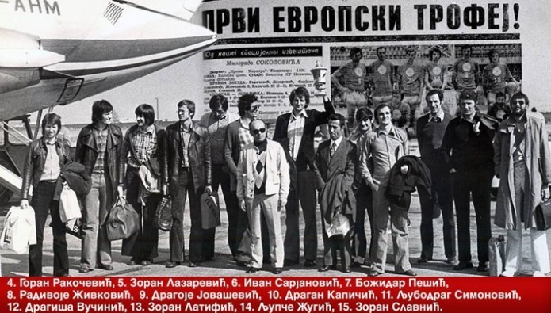
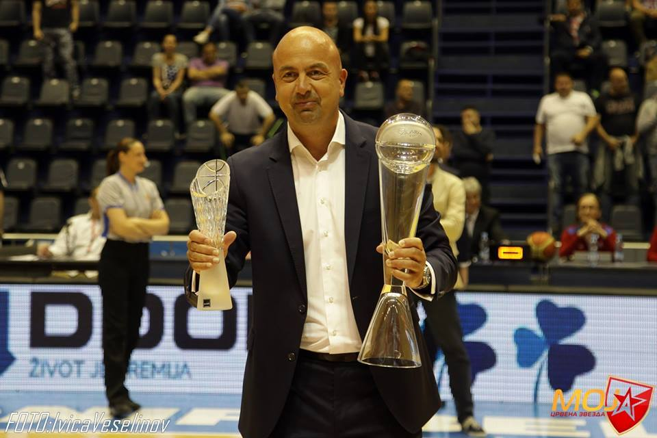
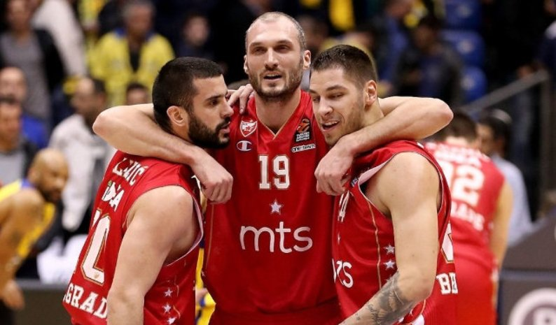

Кошаркашки клуб Црвена звезда
Кошаркашки клуб Црвена звезда је српски професионални клуб из Београда. Црвена звезда се такмичи у Кошаркашкој лиги Србије и домаћем Купу Радивоја Кораћа. До сада није испадао из прве националне лиге. Такође, чини Јадранску кошаркашку асоцијацију и такмичи се у АБА лиги, која одређује који ће се тимови такмичити у Евролиги а који у Еврокупу. Према УЛЕБ-овој листи Звезда је најбоље рангиран клуб од свих српских клубова, као и свих клубова из Јадранске лиге. Као домаћин, Звезда игра утакмице игра у хали Пионир, саграђеној 1973, са капацитетом од 5.878 седећих места, док утакмице у Европским такмичењима игра и у Штарк арени са предвиђеним капацитетом од 18.386 седећих места. Навијачи Црвене звезде се називају Делије.
Кошаркашки клуб Црвена звезда као посебна секција основан је истог дана када и Спортско друштво, 4. марта 1945. године. Први руководилац кошаркашке секције била је Мира Петровић. Међутим, веома брзо је бригу о Звездиним кошаркашима преузео Мирко Аксентијевић-Бата. Убрзо му се прикључио и Небојша Поповић, па су њих двојица заједно радили на унапређењу кошаркашке екипе Црвене звезде.
Првих десет година постојања, представља златно доба КК Црвена звезда. Освојено је десет узастопних титула државног првака. У 149 утакмица остварила 125 победа, имала 4 нерешене утакмице и претрпела 20 пораза. Синоним за кошарку био је Мали Калемегдан, где је Звезда и играла у првим годинама свога постојања. Један од најчешћих гледаоца на трибинама био је и једини српски нобеловац Иво Андрић, коме је нуђено да буде председник клуба. Тадашњи тим био је предвођен петорком: Небојша Поповић, Тулио Роклицер, Александар Гец, Ладислав Демшар и Срђан Калембер. Калембер ће заједно са саиграчем Миланом Бјегојевићем остати упамћен као играч са највише националних титула освојених са Црвеном звездом — и то укупно 9 у периоду од 1946. па до 1954. године. Ови успеси су били утолико већи с обзиром на декрет тадашње власти, по којој су сви Звездини играчи који су били војна лица морали да пређу у редове ривалског клуба Партизана. Међу њима најпознатији су: браћа Шапер, Ратко Влаховић, Браца Алагић и Александар Николић. Александар ће се међутим вратити у Црвену зведу после само једне сезоне и учествовати у освајању три националне титуле. Пар година касније у Партизан је прешао и Борислав Станковић.
Десетогодишњи низ освајања домаћих првенстава Звездиних кошаркаша окончан је 1956. године. Многи тимови су покушавали да прекину овај низ, али је то коначно пошло за руком екипи зрењанинског Пролетера. Наредних осам сезона од 1957. до 1964, првенством су доминирале екипе ОКК Београда и љубљанске Олимпије које су се тих година смењивале на трону. У том периоду Црвена звезда је у потпуности изменила састав. Поред играчког кадра, тренера Небојшу Поповића заменио је Александар Гец, а затим и Милан Бјегојевић.
1965. године Кошаркашки савез Југославије је донео одлуку да се првенства играју у затвореним халама и то почевши од сезоне 1967/68. Тако је 1967. године у новембру на Малом Калемегдану одиграна последња званична утакмица — и то против Работничког из Скопља. Након тога, Звезда је своје утакмице играла на Сајмишту док се није изградила Хала спортова на Новом Београду.
Тих сезона био је евидентан напредак Звездиних кошаркаша, а полако је стасавала и једна нова генерација, коју су предводили Владимир Цветковић, Зоран Славнић, Љубодраг Симоновић, Драган Капичић. Коначно је у сезони 1968/69. освојена 11. титула Југословенског првенства. Те године су по два пута савладани тадашњи шампион Задар и Партизан. Титулу је након 14. година Звезди донела већ поменута генерација, у којој су били и Драгиша Вучинић и Иван Сарјановић, а са клупе их је предводио Милан Бјегојевић. Наредна сезона 1969/70. је била значајна јер је екипа по први пут наступила у Купу европских шампиона. У 1. колу елитног такмичења елиминисана је екипа Спарте из Луксембурга (112 : 92 и 128 : 84), а у осмини финала избачен је и грчки Панатинаикос (91 : 66 и 75 : 83) и тиме обезбеђен пласман у четвртфиналну групу. Међутим, у конкуренцији ЦСКА из Москве, италијанског Игниса и француског Асвела, није се могло више од последње четврте позиције.
Успеси Црвене звезде од 1970. године
Сезона 1970/71, када је Југословенски шампионат у питању, завршена је на трећој позицији иза Југопластике и Локомотиве, али је зато освојен први трофеј у националном купу. Финале је одиграно у Љубљани, а Звезда је савладала домаћу Олимпију резултатом 82 : 70. Наредна сезона 1971/72. била је најуспешнија у дотадашњој историји. У драматичној завршници Југословенске лиге, Црвено-бели су дошли до 12. шампионског трофеја. Црвена звезда и Југопластика су у регуларном делу шампионата остварили идентичан скор од 17 победа и 5 пораза, тако да је о прваку одлучивала мајсторица. У одлучујућем мечу Црвено-бели кошаркаши славили су са 75 : 70 и дошли до нове титуле. Поред овог успеха, пулени Братислава Ђорђевића остварили су и велики успех на међународној сцени. У оквиру Купа победника купова, Црвено-бели су дошли до првог европског финала. У финалу противник је била италијанска екипа Симентала која је у неизвесној завршници ипак била успешнија и резултатом 74 : 70 дошла до победе.
Сезона 1972/73. није донела одбрану националне титуле, КК Раднички Београд је био за корак бољи, али је освојен други трофеј у националном купу. Велико финале одржано је у Загребу, а резултатом 71 : 65, кошаркаши Црвене звезде савладали су Партизан. Такође, те сезоне забележен је и други наступ у Купу европских шампиона. У 1. колу холандски Левис фламингос је савладан резултатима 107 : 74 и 72 : 88, да би у борби за пласман у четвртфиналну групу Црвена звезда савладала албанску екипу Партизана резултатима 99 : 74 и 94 : 83. У групној фази, Црвено-бели су у конкуренцији Макабија (103 : 88, 102 : 113), Реал Мадрида(80 : 70, 77 : 74) и Симентала (74 : 80, 85 : 108) заузели другу позицију и пласирали се у полуфинале елитног такмичења. У утакмици за финале московски ЦСКА је био бољи.
Наредна сезона 1973/74, остаје златним словима уписана не само у аналима КК Црвена звезда већ и тадашње југословенске кошарке, јер је ККЦК остварио до тада највећи успех — освојивши Куп европских победника купова. Све је почело са две победе против албанског представника 17. Нандори, резултатима 114 : 70 у првој и 99 : 83 у другој утакмици. Звездини кошаркаши пласирали у финале где их је чекала чехословачка Збројовка. Звезда је победила у финалу резултатом 86 : 75, и први европски клупски трофеј је стигао у Београд. Велики међународни успех, Црвено-белима су донели Ракочевић, Лазаревић, Сарјановић, Жугић, Капичић, Симоновић, Вучинић, Јовашевић, Славнић, Живковић и Пешић. Екипу је са клупе предводио Александар Николић. Те сезоне првенство је завршено на 3. месту иза Задра и Југопластике, а у купу је пораз доживљен у финалу управо од домаћина Југопластике.
Као освајачи првог европског трофеја, кошаркаши Црвене звезде су у следећу сезону ушли са жељом да и домаће трофеје врате на Мали Калемегдан. Првенство је ипак било недостижно, пошто је Задар још убедљивије дошао до нове титуле, али је зато остварен успех у купу Југославије. Црвена звезда се у нишком финалу реванширала Југопластици за претходни пораз и победом од 81 : 79 стигла до трећег куп трофеја. На међународној сцени, Црвено-бели су бранили титулу у Купу победника купова. Као носилац трофеја Звезда је имала повлашћени статус и директно је жребана за четвртфиналну групну фазу. У конкуренцији белгијског Расинга (116 : 89, 94 : 98), ЦСКА из Софије (102 : 91, 75 : 72) и шпанског Хувентуда (97 : 79, 63 : 78), освојена је прва позиција и обезбеђен полуфинални двобој — и то са Југопластиком. У два меча (81 : 63, 76 : 88) Звезда је била успешнија и пласирала се у ново финале. Екипа Спартака из Лењинграда је за нијансу у финалу била успешнија и резултатом 63 : 62 преузела трофеј.
Након тих успеха, КК Црвена звезда је у наредним сезонама бележила просечне резултате. У сезони 1975/1976. освојена је 5. позиција у првенству, а у купу је забележен пораз у 3. колу од ОКК Београда. Те сезоне је шампион по први пут био Партизан. У периоду од сезоне 1976/77. до сезоне 1979/80, клуб је бележио прилично лоше резултате. У првенству се налазио од 5. до 8. места, а у купу је испадао у 2. и 3. колу, док се у сезони 1977/1978. пласирао у полуфинале.
Пласмани Звезде током 80-их и 90-их година
Коначно је сезона 1980/81. у којој је први тренер био Ранко Жеравица, донела нешто запаженији резултат. На домаћој сцени поново је остварен просечан резултат (5. место у лиги и четвртфинале купа), али је успех остварен у Купу Радивоја Кораћа. И наредна сезона 1981/82, резултатски је била идентична. У првенству је освојена трећа позиција и плеј-оф је окончан у полуфиналу против Цибоне. У Купу Југославије је претрпљен пораз у осмини финала, али је у Купу Радивоја Кораћа Звезда поново стигла до полуфинала. Противник је била екипа Шибенке из Шибеника, која је у два меча (115 : 99, 83 : 101) била успешнија и пласирала се у финале.
Сезона 1982/83. није била резултатски много успешна: четврта позиција у првенству и испадање од Шибенке у полуфиналу плеј-офа, полуфинале националног купа и испадање у четвртфиналној групи Купа Радивоја Кораћа. Резултатски успеси започели су у сезони 1983/84. У регуларном делу првенства освојена је друга позиција иза тада доминантне Цибоне. Након победе Цибоне у Загребу (78 : 76) и победе Звезде у Београду (87 : 79), уследила је узбудљива мајсторица у Загребу. Цибона је минималном победом 72 : 71 освојила шампионски пехар. Ипак, остаје забележено да је судија Радић, касније председник Кошаркашког савеза Хрватске, досудио непостојећи аут у корист Цибоне након чега Накић поентира за победу. У Купу Радивоја Кораћа Звезда Црвена звезда је освојила прво место и пласирала се у полуфинале. У полуфиналу Звезда је била успешнија од шпанске Сарагосе (130 : 100, 87 : 108), али је у финалу француски Елан Берне Ортез победио резултатом 97 : 73.
Наредна сезона 1984/85. је била веома слична. Поново је заузета друга позиција у првенству, а у плеј-офу су након Будућности (2 : 1) и Задра (2 : 0) поново у финалу укрстили копља Звезда и Цибона. И поново је након два меча било 1 : 1 у серији и мајсторица је играна у Загребу. Цибона је славила резултатом 119 : 106 и освојила трофеј. Међутим, остварен је запажен резултат у Купу Радивоја Кораћа. У четвртфиналној групи Звезда је стигла до првог места преко шпанског Ликора (100 : 84, 104 : 102), италијанског Џоли комбанија (100 : 82, 89 : 102) и израелског Хапоела (112 : 75, 88 : 80). Ипак, на путу за ново европско финале Звезда је заустављена на последњем степенику од италијанског Симака (99 : 100, 86 : 109).
Сезона 1985/86. је била нешто слабија. Међутим, коначан успех против Цибоне у плеј-офу КК Црвена звезда је забележила у сезони 1986/87. Сезона 1987/88. остаје упамћена по новом европском успеху. Црвена звезда је у оквиру Купа Радивоја Кораћа поново заустављена у полуфиналу. У групној фази, и поред изузетно јаких противника (Асвел, Естудијантес, ПАОК) обезбеђена је прва позиција и полуфинални двобој са великим Реалом из Мадрида. Реал је у оба меча био бољи (82 : 89, 72 : 81) и заслужено отишао у финале.
После још једне лоше сезоне (1988/89), уследила је сезона 1989/90. у којој је Звезда поново дошла у борбу за трофеје. Међутим, те године је домаћом и европском кошарком владала екипа сплитске Југопластике. У оба домаћа такмичења, Звезда и Југопластика су играли у самој завршници. У плеј-офу Сплићани су са 3 : 1 у серији дошли до трофеја, док је у финалу националног купа које је одржано у Дубровнику — резултатом 79 : 77, Југопластика стигла до другог трофеја те године. Ипак, финале купа је донело Црвено-белима учешће у Купу победника купова.
Сезона 1990/91. била је последња сезона велике Југославије. Та сезона је донела и велики резултатски неуспех, јер су Звездини кошаркаши кроз плеј-аут морали да обезбеђују опстанак. У конкуренцији Слободе из Тузле, београдског Радничког и титоградске Будућности, са скором 5–1 клуб се ипак спасао првог испадања из прволигашког такмичења. Распад некадашње државе довео је и до великих поремећаја у самој кошарци. Сезона 1991/92. била је више него хаотична. Држава се распадала, али су ипак клубови из Србије, Босне и Херцеговине и Македоније учествовали у такмичењу. Те сезоне Звездине кошаркаше је са клупе предводио Душко Вујошевић. Звезда је у финалу плеј-офа поражена од највећег ривала Партизана са 3 : 0 у серији, док је у домаћем купу, екипа Босне била боља у полуфиналу резултатом 106 : 101. Напокон дуго очекивана титула се поново вратила на Мали Калемегдан 1993. године, и то после 21 године поста. Екипа је заузела прву позицију на табели у регуларном делу шампионата. У плеј-офу преко шабачке Иве обезбеђено је велико финале са Црно-белима. Та генерација предвођена Небојшом Илићем, Сашом Обрадовићем као и младим Дејаном Томашевићем, и са клупе Владиславом Лучићем, успела је у финалу да победи Партизану утакмицама за памћење (3 : 2 у серији) и освоји 13. шампионску титулу у историји клуба. Поред водећих играча памтиће се игре Александра Трифуновића и Љубе Видачића. Због санкција Звезда наредне сезоне није учествовала у Купу европских шампиона.
И сезона 1993/94. је за КК Црвена звезда била шампионска. Предвођени тренером Лучићем, Звездини кошаркаши су у плеј-офу преко Морнара из Бара, шабачке Иве и Партизана стигли до новог трофеја. Током сезоне је Звезда играла променљиво; забележено је 9 пораза у лигашком делу, али непосредно пре плеј-офа у тим се враћа Саша Обрадовић. Игра се нагло окренула, а Саша постао њен главни носилац. Лучић у финалу вади свог џокера Радета Милутиновића који је имао великог удела у игри Звезде, иако није био водећи стрелац. У финалној серији Црвено-бели су савладали Партизан са 4 : 1. Црвена звезда је имала велику прилику да по први пут у историји дође до другог домаћег трофеја у једној сезони. У националном купу уследило је поновно финале са Партизаном. Партизанови кошаркаши су победом 104 : 102 дошли до пехара.
Половином ’90-их година 20. века уследила је и прва општа криза у клубу. С друге стране, на домаћој кошаркашкој мапи појављују се мањи клубови са великим буџетима али се због тога брзо и гасе. Тако је Црвена звезда у сезони 1994/95. у полуфиналу плеј-офа елиминисана од Боровице из Руме а наредне сезоне у четвртфиналу домаћег шампионата боља је била екипа БФЦ Беочин. Сезона 1995/96. остаје упамћена и по томе што се Звезда након санкција поново нашла на међународној сцени. Поново је то био Куп Радивоја Кораћа, али се овога пута морало кренути од самих квалификација. Екипа предвођена тренером Славнићем је изгубила у двомечу од руске екипе Акваријус, па је након тога Славнић и поднео оставку.
Критичну тачку своје дотадашње историје Црвена звезда је доживела у сезони 1996/97. У конкуренцији 14 екипа у домаћем шампионату, Црвена звезда је заузела тек 12. позицију и за мало избегла испадање из лиге. Те сезоне Звезда је учествовала и у Купу Радивоја Кораћа, где су постигнути скромни резултати. У 1. квалификационом колу савладан је бугарски Компакт, да би у другој, групној фази квалификација, Звезда у конкуренцији шпанског Касереса, руског Спартака и пољског Кофорда заузела другу позицију и пласман у 1. званично коло Купа Кораћа. Непремостива препрека у тој рунди био је солунски ПАОК.
Звездини успеси од краја 90-их па до данас
Сезона 1997/98. значила је буђење клуба. Тим је био јединствен спој искусних играча који су дошли из БФЦ Беочина Миленка Топића, Жељка Топаловића и Владимира Кузмановића, док су из Беобанке дошли Оливер Поповић и Војкан Бенчић, што је уз Јова Станојевића, Игора Ракочевића и Златка Болића представљало заиста најбољи тим у тадашњој СР Југославији. Овај тим је оправдао очекивања и стигао до шампионског пехара СР Југославије и финала Купа Радивоја Кораћа. Интересантно је напоменути да је Звезда током сезоне променила чак четири тренера. То су били Ранко Жеравица, Том Лудвиг, Владислав Лучић и Михаило Павићевић. У регуларном делу првенства, Звезда је освојила трећу позицију иза Партизана и Будућности. У другом полуфиналном дуелу догодило се још једно изненађење, где је петопласирани ФМП елиминисао Партизан, па је дошло до неочекиваног финала. Први финални дуел добила је Звезда резултатом 63 : 56. У Железнику ФМП је поравнао на 1 : 1 у серији резултатом 68 : 65 и тај пораз је био кобан по тренера Лучића. Под изговором да је потребно раздрмати екипу, руководство је сменило Лучића и на клупу довело Михаила Павићевића. Наредна два дуела, Црвена звезда је решила у своју корист и резултатима 67 : 63 и 77 : 76 стигла до 15. шампионског пехара.
Те сезоне велики успех је остварен на међународној сцени у Купу Радивоја Кораћа. Црвена звезда заузела је прву позицију претрпевши само један пораз — и то од Грка у Београду. У финалном двомечу Звезду је чекао италијански Маш из Вероне. Први сусрет у Верони Звездини играчи су решили у своју корист резултатом 74 : 68, али у реваншу у Београду пред препуним трибинама хале Пионир, и још неколико хиљада људи на београдском Тргу Републике доживљен је пораз од 64 : 73, чиме је укупним резултатом 141 : 138 за екипу Маша трофеј отишао у Верону.
Захваљујући титули из претходне сезоне, Звезда је за сезону 1998/99. стекла право наступа у Евролиги. Управо је та сезона донела и први двобој са једним од клубова из некадашње Југославије, и то са највећим ривалом загребачком Цибоном. Због уласка навијача на паркет током прошлосезонског финала Купа Кораћа Звезда је са Цибоном играла без присуства публике и из тог разлога претрпљен је пораз резултатом 66 : 69. Ипак, Црвено-бели су се реванширали Цибосима и у загребачкој хали славили резултатом 80 : 77. Ову сезону Евролиге Црвено-бели су завршили са скором од четири победе и 12 пораза. Остаје за памћење да је Звезда победила освајача Евролиге те сезоне, екипу Жалгириса. Када је реч о домаћем шампионату, плеј-оф није одржан због НАТО бомбардовања СР Југославије, тако да је лидер након регуларног дела, екипа Будућности из Подгорице проглашена шампионом.
Последњу сезону 20. века обележио је нови наступ у Евролиги. Сезона у Евролиги је окончана са свега две победе и 14 пораза. У домаћем шампионату плеј-оф је окончан у полуфиналној серији са Партизаном поразом од 2 : 3 у серији, док је домет у националном купу било четвртфинале, где је ФМП Железник славио са убедљивих 79 : 56. Прелаз у нови миленијум донео је нове потешкоће у функционисању КК Црвена звезда. Наредних година дошло је до великих осцилација како у резултатима тако и у самој организацији клуба. У тиму су стасали млади талентовани играчи попут Милоша Вујанића, Милутина Алексића и Јована Копривице.
У сезони 2002/03. Црвена звезда по први пут учествује у Јадранској лиги која је формирана годину дана раније. Доласком словеначког тренера Змага Сагадина, дошло је до великих новина у Звездином тиму. Сагадин је пронашао и пар играча у нижим лигама који ће касније имати запажене каријере: Чедомир Витковац, Вук Радивојевић, Горан Јеретин и Лука Богдановић. Звезда је појачана са два искусна страна играча, Американцем Скунијем Пеном и Нигеријцем Обином Екезијем; заблистала је али није успела да се домогне иједног трофеја. Најближа је била трофеју у Јадранској лиги, али је у полуфиналу изненађење направила екипа Задра која ће и у финалу изненадити Макаби из Тел Авива.
У следећој сезони посебно се мора истаћи и повратак Игора Ракочевића у европску кошарку, и то управо у тим Црвене звезде. Захваљујући њему и повређеном Јеретину тим се 2004. године домогао још једног домаћег купа, након 28 година. Остаће забележено да је тим Црвене звезде последњих пар секунди продужетка одиграо са 4 играча у четвртфиналу против Партизана. Након тога у полуфиналу је опет након продужетка савладана Војводина, а у финалу за 56 секунди успео да стигне 9 поена предности Рефлекса, и у продужетку их добије предвођен повређеним Јеретином, без капитена Игора Ракочевића.
Затим се управа одлучила за проверене снаге под вођством искусног тренера Шакоте. Већ прве сезоне оформио је јак састав предвођен Миланом Гуровићем. Окосницу тог тима чинили су још и Лари О’Банон, Перо Антић, Мирослав Раичевић, али остаје запажено и појављивање младог Тадије Драгићевића. Ипак, поред запажених успеха у УЛЕБ купу као и освајања Купа Радивоја Кораћа, недостајале су титуле како у Јадранској тако и у домаћој кошаркашкој лиги. Највећи узрок су биле бројне повреде играча који су у финишу сезоне дошли до одличне форме.
Доласком Слободана Вучићевића на место председника клуба чинило се да ће клуб успети да се извуче из кризе. Доведени су млади и перспективни играчи, а као највеће појачање именован је тренер Светислав Пешић. Пешић је у тим довео неколико талентованих играча попут Марка Кешеља и Владимира Штимца, из Аркадије доводи до тада готово непознатог Немању Бјелицу, док су на месту странаца доведени Лоренс Робертс и Андре Овенс. Тим успева да се домогне многих домаћих финала и направи значајне резултате у Еврокупу, али ипак није успео да се домогне титула. Најближи су били титули у Кошаркашкој лиги Србије; међутим, после спорног финала када је Пешић уместо неког из савеза делио сребрне медаље својим играчима, клуб је ипак морао да се задовољи другим местом. Иако је сезона завршена без титула, у клубу је изникло једно од највећих изненађења — Немања Бјелица, као и доказани таленат — Марко Кешељ. Они ће касније заслужити и позив селектора репрезентације Србије.
Ипак, Вучићевић је након те сезоне отишао из клуба, који је и даље био у кризи. Већина носилаца игре је напустила екипу. У тиму су остали само домаћи млади играчи којима се придодао једини странац, Мајк Тејлор. У јануару је именована нова управа на челу са Владиславом Лучићем да спречи гашење клуба. Током сезоне екипа губи носиоце игре, али се исказује невероватан таленат Немање Бјелице кога су желели сви европски тимови. Ношени његовом игром и тренером Александром Трифуновићем Звезда успева да задржи статус у Јадранској лиги. Посртање се свеједно наставља оставком Лучића и читаве управе. Криза је кулминирала када је управни одбор клуба поднео оставке, а постојала је и могућност одласка клуба у стечајни поступак. На крају је привредни суд одлучио да КК Црвена звезда као спортска организација не иде у стечај.
У сезону 2010/11. клуб је ушао са младим играчима као што су Немања Недовић и Александар Цветковић, али и са пар искуснијих играча који су могли да попуне тим упрокос лошој финансијској ситуацији. Пре свега ту је капитен Борис Бакић, као и Вујадин Суботић и појачања из Крке — Урош Николић, и Партизана — Страхиња Милошевић и Дарком Балабаном. У Јадранској лиги је остварен најлошији пласман уз скор од свега 8 победа и 18 пораза. У тој сезони у тиму су били и амерички кошаркаши Џамар Јанг, Рикардо Марш и Ентони Мајлс, који су дали велики допринос опстанку и избегавању последњег места на табели које је аутоматски значило дисквалификацију за следећу сезону. Ипак, због финансијске ситуације са њима није склопљен договор о продужењу уговора. Због тога се по завршетку Јадранске лиге тим расуо у моменту када је створена одлична хемија и у тако ослабљеном саставу, а тренера Увалина заменио је Александар Никитовић. Тако десеткован тим дошао је у полуфинале купа где је доживљен пораз од ФМП-а. У првенству Србије у којем нису играли већ поменути амерички кошаркаши и Страхиња Милошевић, изборено је тек 5. место и клуб се није пласирао у плеј-оф.